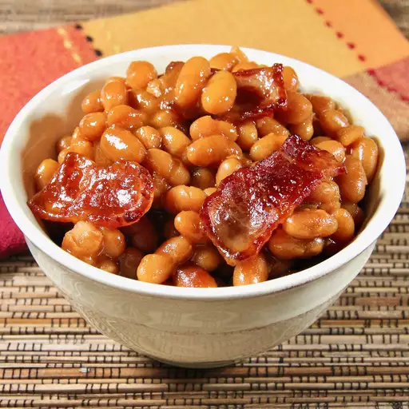

Beans

Simple baked beans
This simple recipe takes some canned baked beans with pork and adds a touch of extra flavour using bacon, onion and some other ingredients easily found in your store cupboard.
Ingredients
- cooking spray
- 2 (16oz) cans of baked beans and pork
- 1/4 cup molasses
- 1/4 cup chopped onions
- 4 tablespoons brown sugar
- 2 tablespoons ketchup
- 1 tablespoon prepared mustard
- 2 slices of bacon, chopped
Steps
- Preheat the oven to 175C. Grease a casserole dish with cooking spray.
- Mix together all other ingredients except the bacon in a large bowl. Transfer the mixture to the casserole dish and add the chopped bacon to the top.
- Cover and bake in the oven until thickened, about 3 hours.